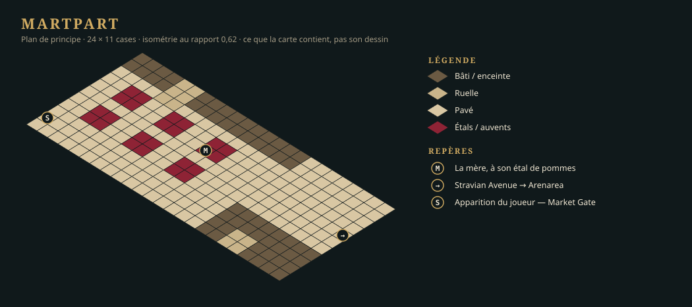
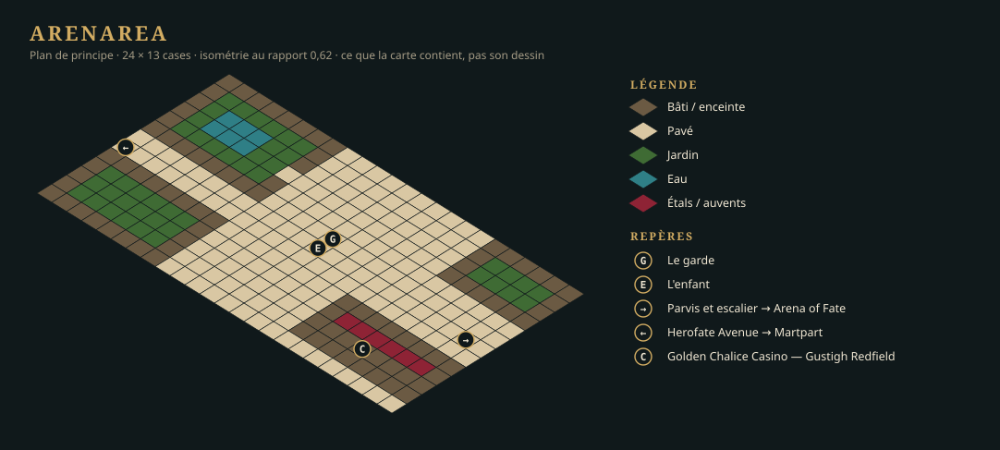
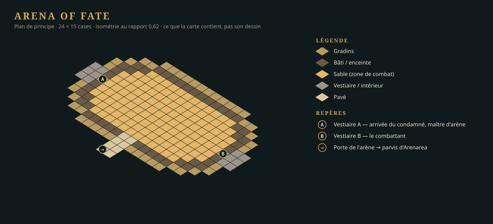

Version 0.0.1 — démo basique
Livrée le 25 septembre 2026 — tag
v0.0.1, recette au LOT-122. Le bilan de la version dit ce qui a coûté plus que prévu et ce que la0.0.2en retient. Les mannequins (LOT-145) sont partis à la0.0.2sans influencer la démo (D-26).
Ce qui a changé le 25 septembre 2026
La démo ne produit plus ses zones. Ses lots de world building — assets, cartes et PNJ de l'Arena of Fate et de Martpart, PNJ d'Arenarea (LOT-106, LOT-107, LOT-110, LOT-111, LOT-113, LOT-114, LOT-115) — étaient trop complexes pour elle et partent à la 0.0.3, où ils s'inscrivent avec les six autres quartiers (D-25). Les livraisons d'Arenarea (LOT-108, LOT-109) sont loin du standard voulu pour le jeu final : elles se refont là-bas aussi (LOT-147), et la démo n'en dépend plus.
Les trois cartes enchaînées restent, fortement réduites à des cartes de principe — ce que les plans ci-dessous montrent, rien de plus —, en un seul lot : LOT-146. Elles se jouent en maquette (LOT-128), et les PNJ y sont les mannequins du LOT-145 ou des jetons, en attendant leur production.
Trois filières en parallèle
| Piste | Lots | Ce qui la bloque |
|---|---|---|
| Le standard et le moteur HD | LOT-101 → LOT-102, LOT-103 → LOT-104 → LOT-105 → LOT-129 ; LOT-112 (héros) — tous livrés ; les mannequins (LOT-145) sont partis à la 0.0.2 (D-26) | rien |
| Le moteur de la quête | LOT-116 (drapeaux, livré), LOT-117 (jet en dialogue), LOT-118 (combat sur la carte, livré), LOT-119 (écrans de fin) | rien |
| Les cartes et la quête | LOT-128 → LOT-126 → LOT-146 (les cartes de principe) → LOT-120 (la quête ; « Nouvelle partie » entre dans la démo), LOT-121 (l'onglet « Carte ») → LOT-122 (recette) — tous livrés | rien : l'éditeur est prêt (LOT-123 à LOT-127, livrés) |
Ce que la démo contient
Trois lieux — deux quartiers et un donjon, l'Arena of Fate, sous-zone d'Arenarea, qui tient en deux cartes (décision D-21 : un niveau est une carte) —, en cartes de principe ; cinq PNJ à rôle, tenus par le mannequin humanoïde ou des jetons ; un adversaire ; quatre dialogues ; un drapeau de quête ; deux écrans de fin. Le détail est dans la fiche de la quête.
Martpart
{kind=link}

Arenarea
{kind=link}

Arena of Fate — donjon d'Arenarea
{kind=link}

Ce que la démo ne contient pas
Ni sauvegarde, ni groupe, ni classes, ni expérience, ni marchand, ni audio, ni création de personnage. Ni pièce propre à une zone, ni figurine de PNJ, ni foule : c'est la 0.0.3. L'Illu Die Arena, le casino et l'hippodrome sont des façades — sur une carte de principe, des murs.
Ce que la démo a produit quand même
Le standard 2D HD et sa chaîne de production, le kit commun de la Capitale (LOT-105), les étages et les toits (LOT-129), le héros (LOT-112), et les pièces d'Arenarea (LOT-108) avec sa carte (LOT-109) — ces deux derniers à reprendre. Les dix-huit pièces du Colisée installées par le LOT-104 restent sous capital/arenarea/arena-of-fate/Scene/ : la carte de principe de l'arène peut s'en habiller, sans que rien ne l'y oblige.